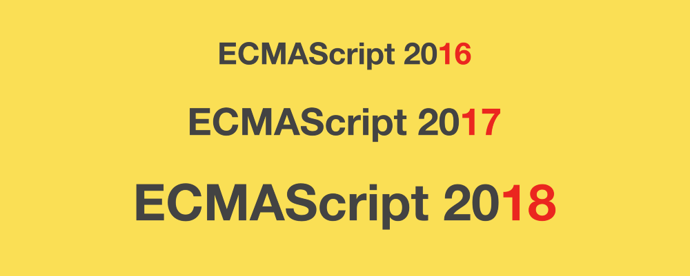

<!DOCTYPE html>
<html lang="en">
<head>
    <meta charset="UTF-8">
    <meta name="viewport" content="width=device-width, initial-scale=1.0">
    <meta http-equiv="X-UA-Compatible" content="ie=edge">
    <title>兴趣使然的HTML记录</title>
    <link rel="stylesheet" href="css/index.css">
    <link rel="stylesheet" type="text/css" href="css/details.css"/>
    <script src="js/jQuery.js"></script>
    <script src="https://unpkg.com/vue@3/dist/vue.global.js"></script>
    <script src="https://unpkg.com/vue-router/dist/vue-router.js"></script>
    <script src="https://unpkg.com/axios/dist/axios.min.js"></script>
	<script src="https://cdn.staticfile.org/vue-resource/1.5.1/vue-resource.min.js"></script>
    <link rel="stylesheet" href="https://cdnjs.cloudflare.com/ajax/libs/Swiper/4.0.2/css/swiper.css">
</head>
<body>
    <!-- 开始 -->
    <div class="nonc">
        <div class="nonce">
            <div class="nonces">
                <h1>兴趣使然的HTML记录</h1>
                <p>学无止境</p>
                <div class="link">
                    <a id="index" href="#">首页</a>
                    <a id="about" href="#">关于</a>
                    <a href="#">联系</a>
                </div>
            </div>
        </div>
    </div>
    <!-- 关于 -->
    <div class="about alex">
        <h1>About me...</h1>
        <span>刹那芳华</span>
        <p> 一个简单的记录 个人简单的总结 <br>
        朝露昙花,咫尺天涯<br>
        人道是黄河十曲，毕竟东流去<br>
        八千年玉老，一夜枯荣，问苍天此生何必<br>
        昨夜风吹处，落英听谁细数<br>
        九万里苍穹，御风弄影，谁人与共<br>
        千秋北斗，瑶宫苦寒，不若神仙眷侣，百年江湖
        </p>
    </div>
    <!-- 首页 -->
    <div class="index alex" name="myDetails">
        <ul id="uls">
            <!-- {{ data.data.url }} -->
			<li v-for="item in data">
				<a href="#" onclick="get($(this))" :data=item.url>{{item.title}}</a>
				<p>{{item.words}}</p>
				
				<div class="hrs"></div>
			</li>
        </ul>
		<div id="details_data" style="display: none;">
			<div id = "details_es6" style="display: none;">
				<a href="#" class="black" onclick="hide()"></a>
				<!-- 返回按钮 -->
				<p id="title">细解&nbsp;<b>JavaScript ES7 ES8 ES9</b>&nbsp;新特性</p>
				<!-- 标题 -->
				<span id="time">2019-04-02&nbsp;&nbsp;&nbsp;·&nbsp;标签:&nbsp;<span>JavaScript</span></span>
				
				<n id="text">
				题记：本文提供了一个在线PPT版本，方便您浏览 <a href="https://tuobaye.com/demo/es7_es8_es9/#/">细解JAVASCRIPT ES7 ES8 ES9 新特性 在线PPT ver </a>
				<br>
				<br>
				本文的大部分内容译自作者Axel Rauschmayer博士的网站，想了解更多关于作者的信息，可以浏览
				<br>
				<a href="https://exploringjs.com/">Exploring JS: JavaScript books for programmersa</a>
				</n>
				<n class="Subheading">
					那些与<b>ECMAScript</b>有关的事情
				</n>
				<br>
				<n class="subtitle">
					谁在设计<b>ECMAScript?</b>
				</n>
				<br>
				<br>
				<br>
				<n class="text">
					TC39 (Technical Committee 39)
					<br>
					<br>
					TC39 是推进 JavaScript 发展的委员会。其会员都是公司（其中主要是浏览器厂商）。TC39 定期召开会议，会议由会员公司的代表与特邀专家出席。会议纪录都可在网上查看，可以让你对 TC39 如何工作有一个清晰的概念
					<br>
					<br>
					很有意思的是，TC39 实行的是协商一致的原则：通过一项决议必须得到每一位会员（公司代表）的赞成。
					<br>
					<br>
				</n>
				<n class="subtitle">
					<b>ECMAScript?</b>的发布周期
				</n>
				<br>
				<br>
				<br>
				<n class="text">
					在2015年发布的 ECMAScript（ES6）新增内容很多，在 ES5 发布近 6 年（2009-11 至 2015-6）之后才将其标准化。两个发布版本之间时间跨度如此之大主要有两大原因：
					<br>
					<br>
					&nbsp;&nbsp;&nbsp;&nbsp;&nbsp;&nbsp;1.版率先完成的特性，必须等待新版的完成才能发布。<br><br>
					&nbsp;&nbsp;&nbsp;&nbsp;&nbsp;&nbsp;2.那些需要花长时间完成的特性，也顶着很大的压力被纳入这一版本，因为如果推迟到下一版本发布意
					&nbsp;&nbsp;&nbsp;&nbsp;&nbsp;&nbsp;&nbsp;&nbsp;味着又要等很久，这种特性也会推迟新的发布版本。
					<br>
					<br>
					很有意思的是，TC39 实行的是协商一致的原则：通过一项决议必须得到每一位会员（公司代表）的赞成。
					<br>
					<br>
				</n>
				<n class="subtitle">
					<b>ECMAScript?</b>的发布流程
				</n>
				<br>
				<br>
				<br>
				<n class="text">
					每个 ECMAScript 特性的建议将会从阶段 0 开始， 然后经过下列几个成熟阶段。其中从一个阶段到下一个阶段必须经过 TC39 的批准
					<br>
					<br>
					&nbsp;&nbsp;&nbsp;&nbsp;&nbsp;&nbsp;1.stage-0 - Strawman: just an idea, possible Babel plugin. <br>
					&nbsp;&nbsp;&nbsp;&nbsp;&nbsp;&nbsp;&nbsp;&nbsp;任何讨论、想法、改变或者还没加到提案的特性都在这个阶段。只有TC39成员可以提交。。<br><br>
					&nbsp;&nbsp;&nbsp;&nbsp;&nbsp;&nbsp;2.stage-1 - Proposal: this is worth working on. <br>
					&nbsp;&nbsp;&nbsp;&nbsp;&nbsp;&nbsp;&nbsp;&nbsp;一份新特性的正式建议文档。提案必须指明此建议的潜在问题，例如与其他特性之间的关联 <br><br>
					&nbsp;&nbsp;&nbsp;&nbsp;&nbsp;&nbsp;3.stage-2 - Draft: initial spec. <br>
					&nbsp;&nbsp;&nbsp;&nbsp;&nbsp;&nbsp;&nbsp;&nbsp;草案是规范的第一个版本。其与最终标准中包含的特性不会有太大差别 <br><br>
					&nbsp;&nbsp;&nbsp;&nbsp;&nbsp;&nbsp;4.stage-3 - Candidate: complete spec and initial browser implementations.<br>
					&nbsp;&nbsp;&nbsp;&nbsp;&nbsp;&nbsp;&nbsp;&nbsp;候选阶段，获得具体实现和用户的反馈。此后，只有在实现和使用过程中出现了重大问题才会修改 <br><br>
					&nbsp;&nbsp;&nbsp;&nbsp;&nbsp;&nbsp;5.stage-4 - Finished: will be added to the next yearly release.<br>
					&nbsp;&nbsp;&nbsp;&nbsp;&nbsp;&nbsp;&nbsp;&nbsp;已经准备就绪，该特性会出现在下个版本的ECMAScript规范之中 <br><br>
					<br>
					当前的stage 1-3列表可以查看这里 –> <a href="https://github.com/tc39/proposals">ECMAScript proposals </a>
					<br>
					<br>
				</n>
			</div>
			<div id = "details_js" style="display: none;">
				<a href="#" class="black" onclick="hide()"></a>
				<!-- 返回按钮 -->
				<p id="title">建设中！！！</p>
				<!-- 标题 -->
			</div>
		</div>
    </div>
</body>
</html>
<script> //页面逻辑
    var a = true; //判断初次点击值
    $("#about").click(function(){
        if(a){
            a=false;
            $(".nonc").animate({
                width:'-=70%'
            });
            $('.about').css({"display":"block"});
            $(".about").animate({
                height:"100%",
                width:'+=70%',
            })
        }
    });
    $("#index").click(function(){
        if(a){
            a=false;
            $(".nonc").animate({
                width:'-=70%'
            });
            $('.index').css({"display":"block"});
            $(".index").animate({
                height:"100%",
                width:'+=70%',
            })
        }
    });
    //初次点击结束
    //初次点击后点击
    $("#about").click(function(){
        if(!a){
            $('.about').css({"display":"block"})
            $('.about').animate({
                height:"100%",
                width:"+=70%",
            })
            $('.index').css({"display":"none"})
        }
    });
    $('#index').click(function(){
        if(!a){
            $('.index').css({"display":"block"})
            $(".index").animate({
                height:"100%",
                width:"+=70%",
            })
            $('.about').css({"display":"none"})
        }
    });
    new Vue({
        el: '#uls',
        data () {
        return {
            data: null
            }
        },
        mounted(){
            axios.get('data/data.json')
			.then(response => (
			this.data = response.data))
			.catch(function (error) { // 请求失败处理
			console.log(error);
			});
		},
	})
		var b
		var c
		function get(e){
			console.log((e.context.attributes.data.nodeValue))
			b = e.context.attributes.data.nodeValue
			$("#uls").hide()
			$("#details_data").show()
			// $("#details_data").load(a)
			console.log(c)
			$(c).hide()
			$(b).show()
		}
		function hide(){
			console.log(b)
			$("#uls").show();
			$(b).hide()
			c = b
			console.log(c)
		}
</script>
